About Me
I am an Electrical and Electronics Engineering undergraduate at the National Institute of Technology Calicut (NITC), with a strong academic foundation and a passion for engineering innovation.
My technical expertise encompasses embedded systems, RTL digital design, power electronics, robotics, and mixed-signal VLSI. I am dedicated to developing robust hardware architectures and solving complex engineering challenges through analytical reasoning and hands-on implementation.
Complementing my technical pursuits, I actively engage in leadership roles, including serving as a Public Relations Lead for collegiate events, fostering cross-functional collaboration and strategic communication.
Experience
Coromandel International Limited
Summer Intern | May 2026 - June 2026 | Kakinada, Andhra Pradesh
- Gained exposure to industrial electrical systems, including power distribution networks, substations, transformers, switchgear, industrial motors, VFDs, and protection systems.
- Studied PLC/DCS-based automation, process instrumentation, and control systems supporting large-scale fertilizer manufacturing operations.
- Observed maintenance practices, utility management, reliability considerations, and industrial safety procedures in a continuous process industry environment.
Robotics Interest Group (RIG)
Sr. Technical Crew | Oct 2024 - Apr 2026
- Contributed to robotics, embedded systems, FPGA, and electronics projects involving control systems, PCB design, sensor interfacing, and autonomous navigation.
- Mentored junior members in hardware design, system integration, and engineering problem-solving while supporting technical workshops and knowledge-sharing initiatives.
- Participated in national-level robotics competitions, including e-Yantra, gaining experience in collaborative engineering and technical project development.
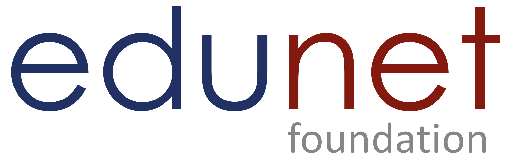
Edunet Foundation (in collaboration with IBM SkillsBuild)
AI & ML Intern | Dec 2025 - Jan 2026
- Completed a structured internship on Artificial Intelligence and Machine Learning, covering data preprocessing, supervised learning, model evaluation, and practical AI workflows.
- Applied Python-based machine learning techniques for data analysis, classification, and predictive modeling through guided projects and hands-on exercises.
- Developed foundational understanding of AI applications, data-driven problem solving, and model development using industry-oriented learning resources.
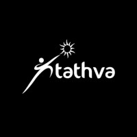
Tathva NIT Calicut
Section Head | Aug 2024 - Nov 2025
- Led teams in conceptualizing, planning, and executing technical events as part of NIT Calicut's annual technical fest.
- Coordinated public relations, outreach, content development, and cross-functional collaboration to support successful event execution.
- Developed leadership, team management, communication, and organizational skills through large-scale event planning and coordination.
Texas Instruments India
BYTE - Workshop Participant | May 2025 - July 2025
- Selected through a competitive screening process for the BYTE Workshop conducted by Texas Instruments, focused on core concepts and applications of analog electronics.
- Gained hands-on exposure to analog circuit analysis, operational amplifiers, signal conditioning, filters, and electronic system design.
- Strengthened understanding of practical analog design techniques through problem-solving sessions, experiments, and industry-oriented learning modules.
Education
National Institute of technology, Calicut
B.Tech in Electrical and Electronics Engineering | Aug 2023 – May 2027
Kozhikode, Kerala
- Current CGPA: 8.29 / 10.00
- Coursework includes Control Systems, Signals & Systems, Network Theory, Embedded System Design
- Exploring concepts beyond the curriculum through self-learning and experimentation
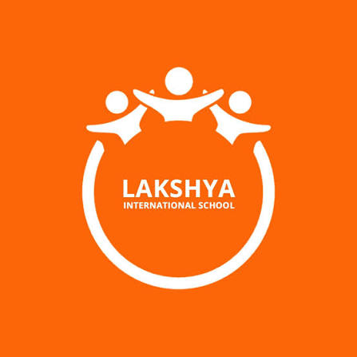
Lakshya International School
Class XII – CBSE | PCM | Apr 2021 – Jun 2023
Kakinada, Andhra Pradesh
- Score: 450/500
- Focused study in Physics and Mathematics with analytical project involvement
- Built foundational problem-solving and reasoning abilities through academic rigor
Aditya Talent School
Class X | Jun 2016 – Apr 2021
Kakinada, Andhra Pradesh
- CGPA: 10.0 / 10.0
- Demonstrated consistent academic excellence and a strong work ethic
- Recognized for discipline, commitment to learning, and leadership potential.
My Skills
Programming Languages
C++
Object-oriented programming, data structures, algorithms, and system-level development.
C Programming
C for system programming, data structures, and algorithms. Strong understanding of memory management and low-level operations.
Python
Python for scripting, data analysis, and general-purpose programming. Familiar with various libraries and frameworks.
Verilog
Verilog HDL for digital circuit design, simulation, and synthesis.
MATLAB
MATLAB for numerical computation, algorithm development, data analysis, and visualization in engineering applications.
Arduino Programming
Arduino microcontrollers for embedded systems, IoT projects, and automation.
Sentaurus TCAD
Sentaurus TCAD for 2D/3D semiconductor device modeling and simulation.
2D/3D Device Modeling
Structuring and analyzing complex semiconductor architectures in TCAD environments.
Git
Git for version control, collaborative development, branching, merging, and managing code repositories.
SQL
SQL for database querying, manipulation, and design. Experienced with relational database management systems.
OpenCV
OpenCV for computer vision tasks, image processing, and object detection.
ROS2
ROS2 for robotic application development, including communication, navigation, and manipulation.
YOLO
YOLO for real-time object detection and recognition in computer vision applications.
Assembly
Learned low-level programming on the PIC18F452 microcontroller using assembly language, gaining a strong understanding of register operations and memory management. I applied this knowledge to control I/O ports, implement timing delays, and interface with peripherals for embedded tasks.
Tools & Design Frameworks
Vivado Design Suite
Xilinx Vivado Design Suite for FPGA and SoC design, including synthesis, implementation, and verification.
LTSpice
LTSpice for analog circuit simulation and analysis, including transient, AC, and DC sweep analyses.
Simulink
Simulink for modeling, simulating, and analyzing dynamic systems. Used for control systems, signal processing, and embedded systems.
Proteus
Proteus ISIS and ARES for circuit simulation and PCB design, including microcontrollers and embedded systems.
QUCS
Experienced with QUCS (Quite Universal Circuit Simulator) for circuit simulation, including RF and mixed-signal circuits.
Altium Designer
Altium Designer for professional PCB design, schematic capture, and layout.
Tinkercad
Tinkercad for 3D design, electronics simulation (Arduino), and coding. Great for rapid prototyping and learning.
MPLAB
Microchip MPLAB IDE for developing and debugging embedded applications with PIC microcontrollers.
Raspberry Pi
Developing projects on Raspberry Pi, including setting up operating systems, programming GPIO, and deploying applications.
ESP
Programming ESP microcontrollers for IoT projects, Wi-Fi connectivity, and sensor integration.
MS Word
Microsoft Word for document creation, formatting, and professional report writing.
Excel
Microsoft Excel for data organization, analysis, and visualization, including formulas and pivot tables.
Jupyter
Jupyter Notebook for interactive computing, data science workflows, and prototyping.
AutoCAD
Observed and learned to understand substation drawings, feeders, and SLDs on AutoCAD, and learned how to draw cross-sections of motors.
Linux
Linux operating systems for development, system administration, and command-line operations.
Wokwi
Wokwi for online simulation of Arduino, ESP32, and other embedded projects, including circuit and code simulation.
My Projects
Major Projects
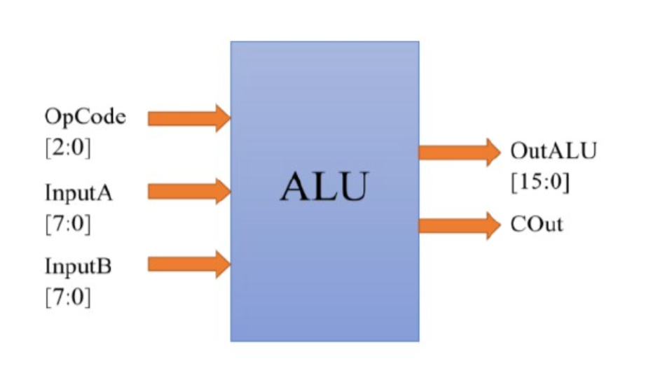
8-Bit ALU Design
An 8-bit Arithmetic Logic Unit capable of performing eight distinct operations using Verilog HDL.
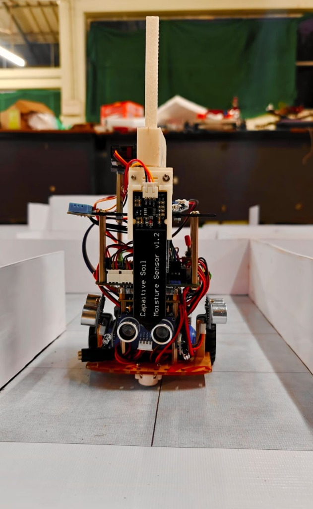
FPGA-Based MazeSolver Bot
Autonomous FPGA-based mobile robot developed for the e-Yantra Robotics Competition, utilizing Verilog HDL and Quartus Prime for path-planning, mapping, and PID motor control.
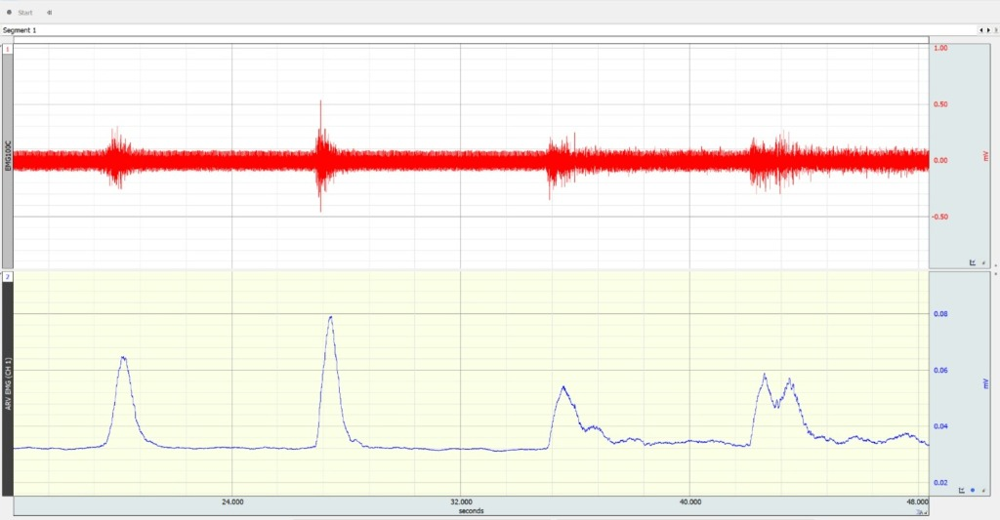
EMG-Based Rehabilitation Gaming System
An EMG-based rehabilitation platform for upper-limb gesture training using surface EMG acquisition and ML.
Semi-Humanoid Robot (RIGGU)
A modular autonomous robot integrating voice commands, SLAM, and joystick control for differential drive navigation.
Face Recognition-Based Attendance System
A Raspberry Pi-based real-time face recognition system for automated attendance logging and database management.
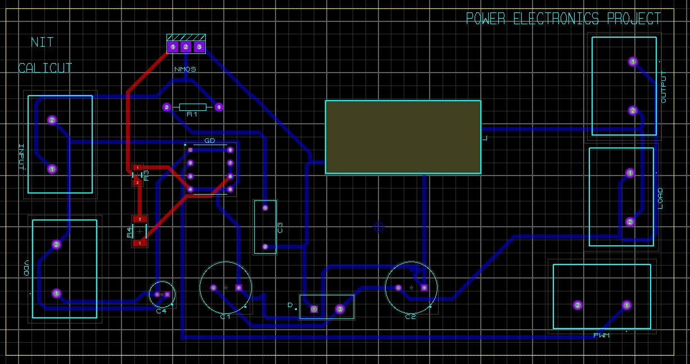
Buck-Boost DC-DC Converter
(100V → 50V/230V)
A high-efficiency DC-DC converter designed for regulated power supply with dynamic load handling.
Minor Projects & Simulations
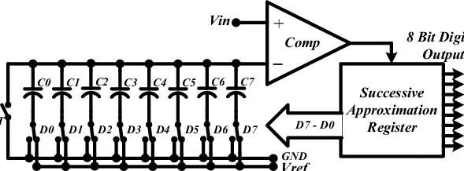
8-bit SAR ADC
A simulated SAR ADC achieving precise analog-to-digital conversion with low error margins.
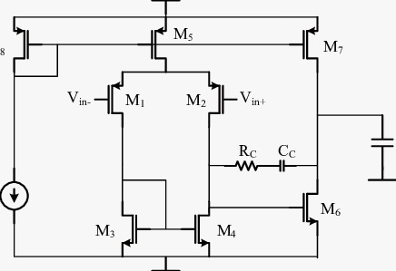
2-Stage CMOS Op-Amp
A Miller-compensated CMOS amplifier designed for high-gain analog signal applications.
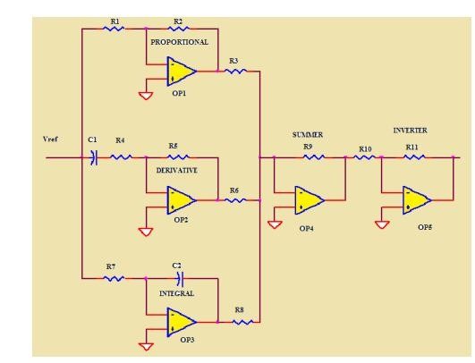
Op-Amp PID Controller
An analog PID control system for DC motor stabilization and speed regulation.
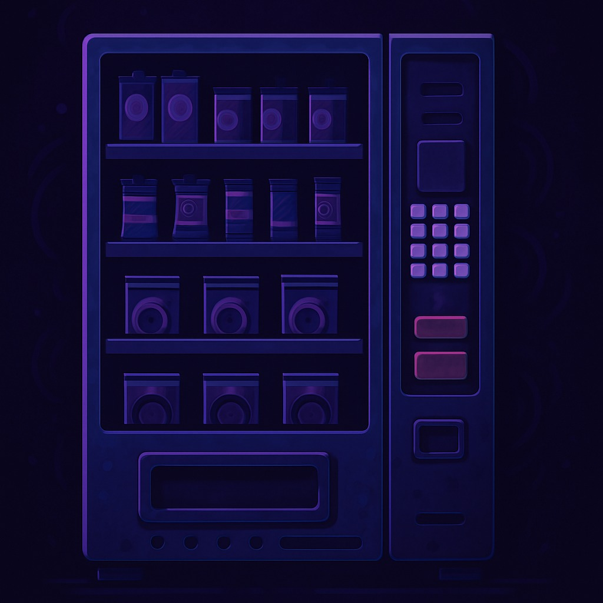
Vending Machine
A Verilog-based finite state machine handling multi-coin, multi-product vending operations with exact change dispensing.
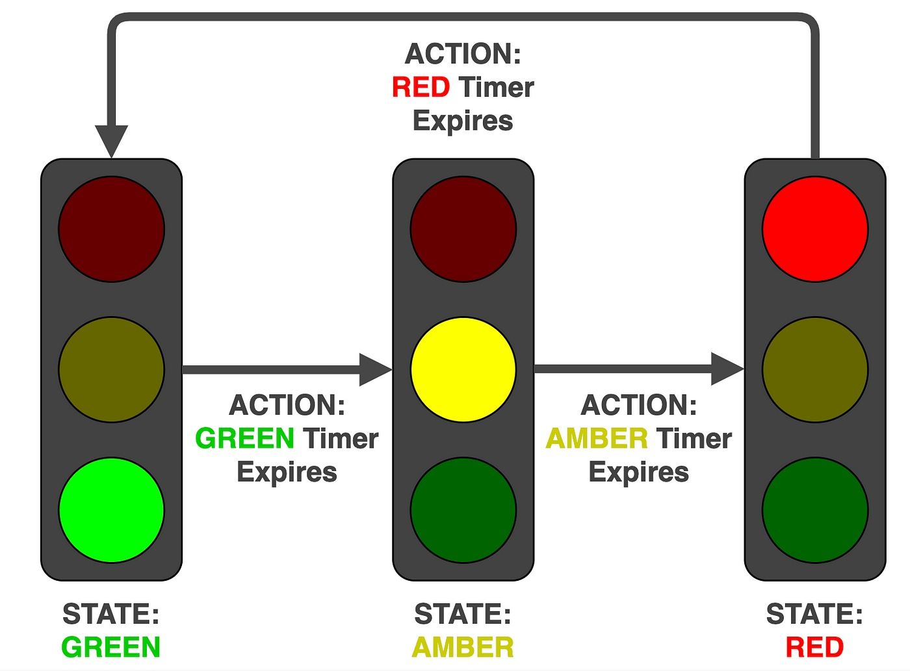
Traffic Light FSM
A digital traffic controller implementing asynchronous emergency overrides and timed light switching.
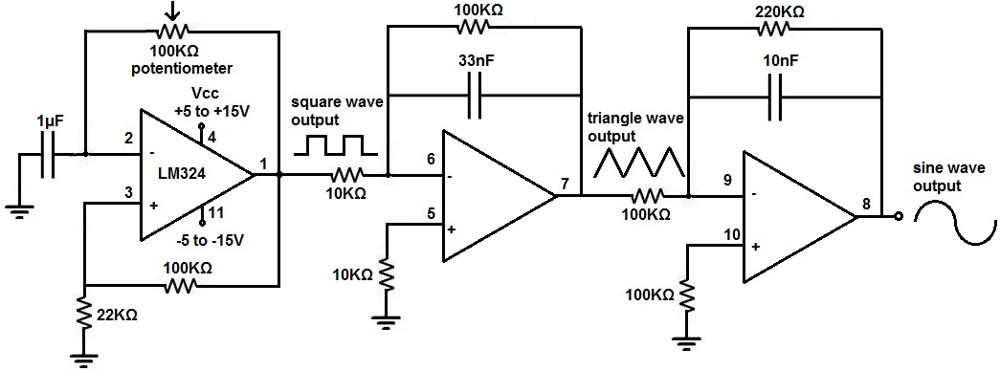
Function Generator Using Op-Amp
A discrete analog circuit generating various waveforms for signal testing.
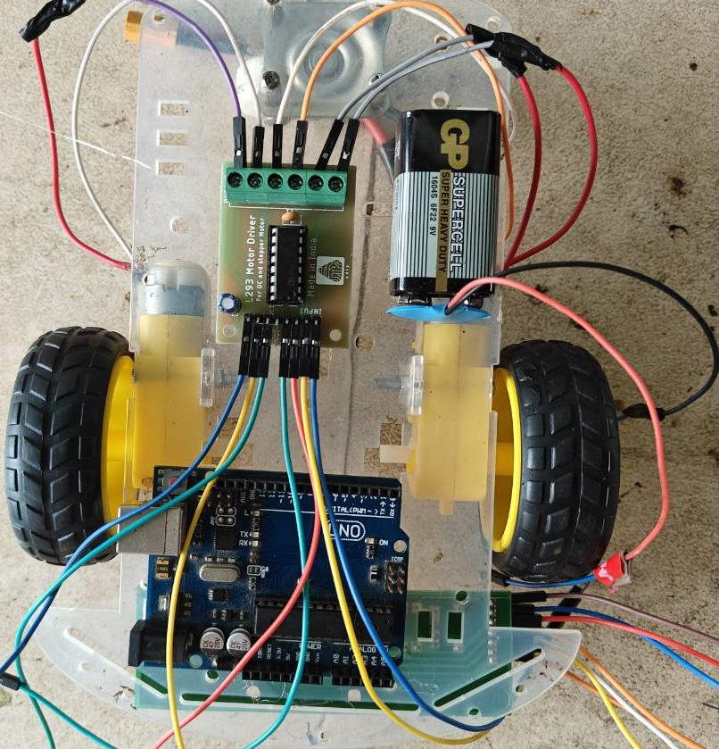
Line Following Bot
A microcontroller-based robot optimized for precise line tracking across complex paths.
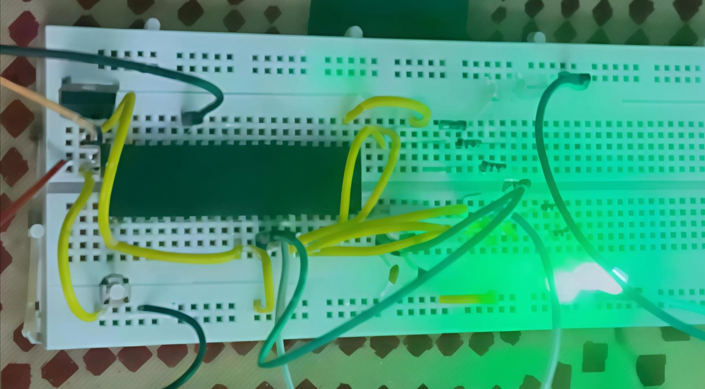
Adaptive LED Blinker
A programmable LED blinker with dynamic frequency selection via switch input.
Certifications & Technical Courses
-
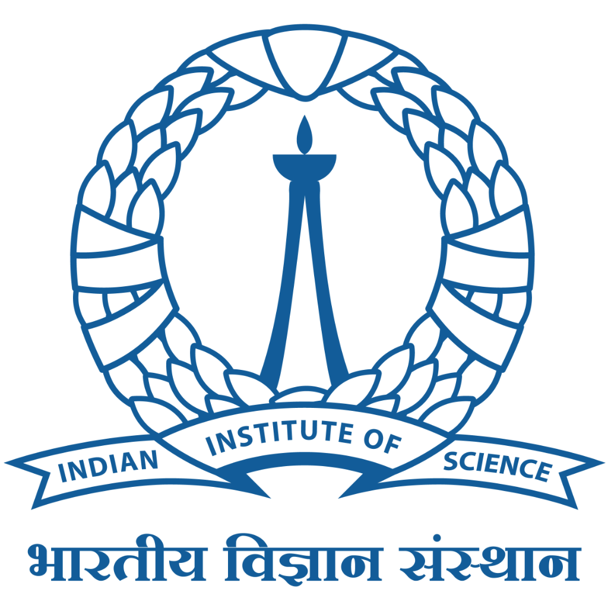
ISWDP Advanced LevelMay 2026 IIScAdvanced level completion of India Semiconductor Workforce Development Program.
-
May 2026 IIT Guwahati – SWAYAM
Developed proficiency in Verilog HDL, combinational and sequential circuit design, and digital system implementation.
-
April 2026 IISc
Level 2 completion of India Semiconductor Workforce Development Program.
-
Mar 2026 IISc
Level 1 completion of India Semiconductor Workforce Development Program.
-
Jan 2026 Samsung
Awarded the Samsung Fellowship under the India Semiconductor Workforce Development Program (ISWDP). Gained exposure to semiconductor device technology and TCAD-based simulation.
-
Dec 2025 Qualcomm Academy
Developed foundational knowledge of Artificial Intelligence, Machine Learning, and data-driven problem solving.
-
Oct 2025 Internshala & IITM Pravartak
Strengthened skills in digital design, RTL development, Verilog HDL, and FPGA-based system implementation.
-
May 2025 NIELIT Calicut
Introduced to the fundamentals of embedded systems, microcontroller architecture, GPIO interfacing, and peripheral control.
-
Jan 2025 MathWorks
Acquired hands-on experience in system modeling and simulation using Simulink for dynamic systems and electrical circuits.
-
Dec 2024 Harvard
Acquired a broad foundation in computer science and programming covering algorithms, data structures, and software engineering.
-
Nov 2024 Udemy
Learned object-oriented programming principles using Python, designing modular and reusable code structures.
-
Oct 2024 MathWorks
Learned to model, simulate, and analyze systems using MATLAB, including matrix operations, and numerical computations.
-
Jun 2023 Udemy
Built a solid foundation in procedural programming using C, covering memory management, pointers, and data structures.
-
Mar 2021 Udemy
Learned the fundamentals of SQL for managing and manipulating relational databases, joins, and normalization.
-
Mar 2021 Udemy
Gained proficiency in Python for scripting, automation, and basic data manipulation using core libraries.
Volunteering & Workshops
-
RTL Design and Verification Workshop
Aug 2025Completed the RTL Design and Verification Workshop, gaining practical knowledge in robust design verification processes.
-
India Semiconductor Workforce Development Program
Feb 2026Organized by IISc. Gained hands-on experience in semiconductor device technology, TCAD workflows, and process simulation. Performed 2D/3D device modeling and thermal simulations.
-
Tutor - Introduction to Robotics Workshop
Oct 2025Conducted a robotics outreach workshop for school students, introducing fundamental concepts of robotics, embedded systems, and autonomous navigation. Mentored participants in building an obstacle-avoiding robot.
-
Tutor - Origo'25
Nov 2025Delivered sessions on robotics fundamentals, PCB design, and embedded systems. Guided participants through schematic capture, routing, and designing an L293D-based motor driver PCB.
-
Volunteer - Origo'25 Workshop
Jan 2025Actively assisted participants during hands-on sessions by troubleshooting technical issues and guiding them through project implementations.
-
ORIGO'24
Jan 2024Participated in a 2-day workshop covering robotics, AI, ML, and embedded systems. Designed and developed a color-following robot.
Extracurriculars
-
Poster Designing
- Designed event posters and banners, enhancing visual communication and clarity.
- Developed a strong aesthetic sense and visual storytelling skills.
-
Event Management (Aug 2024 – Nov 2025)
- Coordinated workshops and successfully executed three EEE section competitions during a technical fest.
- Served as a Program Committee Member for Ekasva, managing logistics and operations.
-
Public Relations Committee (Sep 2023 – Nov 2025)
- Built and maintained sponsor and media relationships for college events.
- Drafted proposals, handled communications, and ensured consistent messaging across platforms.
-
Marketing Committee (Aug 2024 – Nov 2025)
- Executed event promotion strategies across social and offline platforms.
- Created content, managed outreach, and analyzed engagement to improve reach.
-
Taekwondo (Jun 2015 – May 2018)
- Trained in martial arts and competed in inter-school events.
- Won a bronze medal; demonstrated discipline, resilience, and athleticism.